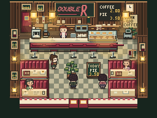
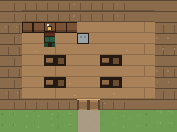
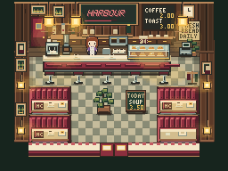
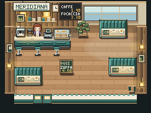
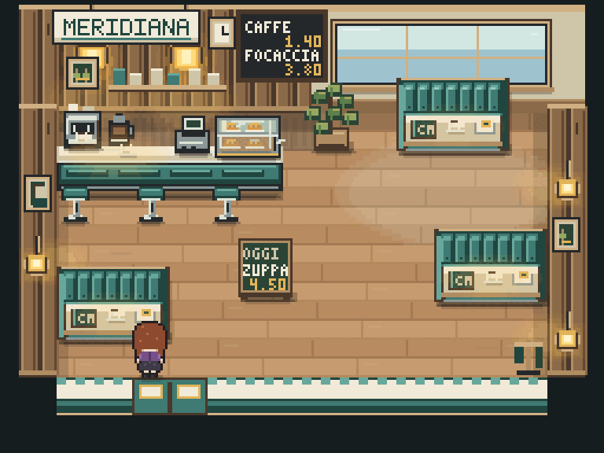

Living Town café — reuse of the Twin Peaks production renderer
Every still is the page's own 256×192 canvas read back from real headless Chrome
(node living-town/tools/capture-cafe.js), shown at exactly 3× with nearest-neighbour scaling. Nothing is retouched.
1 · Reference — Twin Peaks diner, production build

index.html, map diner, in play.
2 · Before — Living Town café at 0f880d4

Own tile art through the shared tile-window callback.
3 · Current — the reuse proof (commit ccf12c5): the Double R's own arrangement with other signs

Proved the production renderer could be hosted. Not a design: same plan, same palette as the diner.
4 · Café Meridiana — Living Town's own room, arranged from the same kit

10:00 — on shift behind the short corner counter. Door off to the left, window and bench on the right, board floor, sea-green and pale oak.19:41 — off shift, ordering from the customer side, at the register.
Activity sequence — three real moments of the simulated day, joined

08:17 she comes in through the door · 09:07 takes up the shift and walks round the open end of the counter · 19:30 the extra shift ends, she comes out and orders. Simulation ticks; nothing is posed.